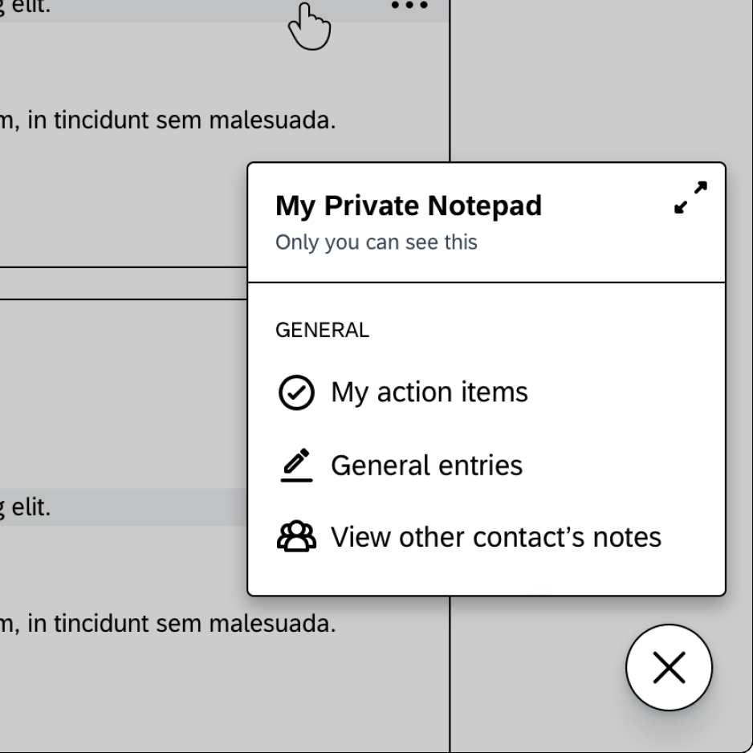
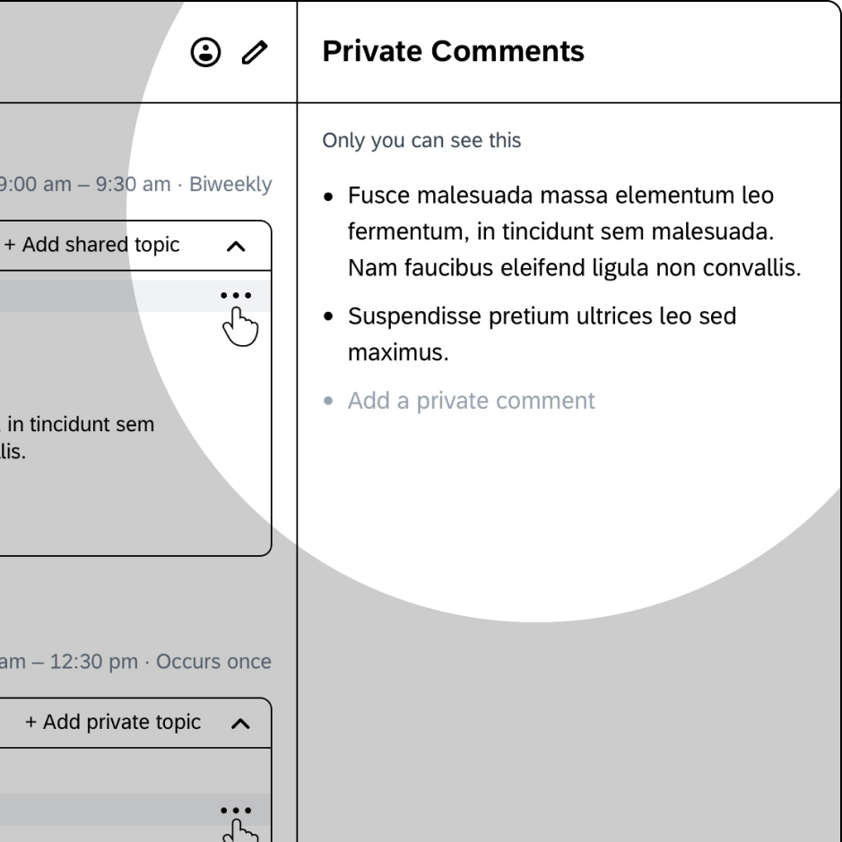
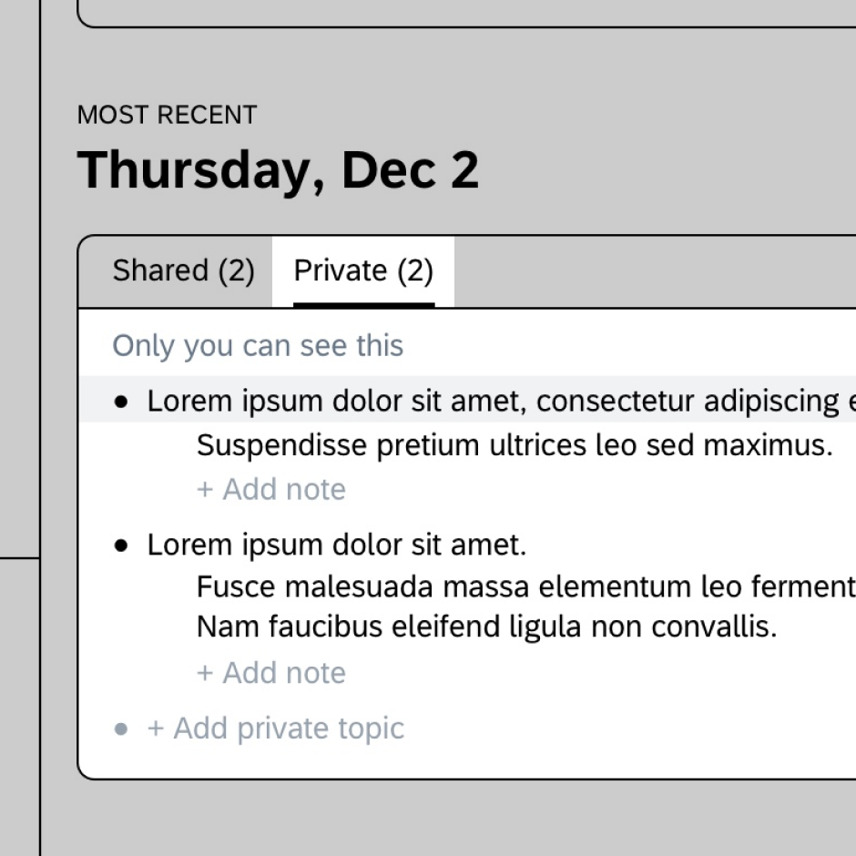
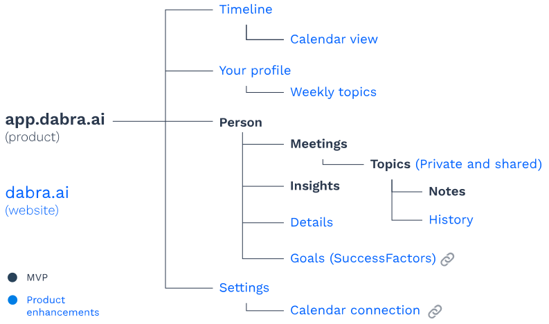

Role
- User research, product design, marketing, brand and web design
- Part of the in-house team in SAP.iO, the internal SAP incubator.
- Worked alongside a dedicated front-end developer in San Francisco, and with the foundational team based in Ra'anana, Israel
- Duration: 1 year
What is Dabra?
Dabra is a startup founded by SAP employees and funded by SAP. Dabra's four founders are based in Israel, and their goal is to improve workplace relationships by focusing on one-one-one (1:1) meetings. Why focus on 1:1 meetings? Because they play a key role in the development of workplace relationships. The product is
a note-taking productivity tool designed to facilitate better recurrent one-on-one (1:1) meetings.
Dabra is a mobile-friendly web application to set shared meeting agendas; it suggests previously discussed topics when preparing for upcoming meetings and provides self-disclosed behavioral insights. These insights give the meeting attendees context about each other for personalized conversations.
Two types of users
The relationship between managers and team members is extremely important, which is why they became our main user types.
- Managers are primarily focused on people and their development. They want to always be ready to make their team members successful in their work.
- Team members are mostly focused on projects and want to have successful relationships with their managers in order to thrive in their careers and get things done at work.
We decided to focus primarily on managers, as they have more points of contact and leverage to drive adoption by inviting their team members.


The product MVP
Dabra went through a couple of iterations before taking off. The first one was a Slack chatbot that reminded managers to prepare for their 1:1 meetings and keep track of their notes. After this iteration didn’t work, the product evolved into an email assistant with similar capabilities, but it was not efficient enough for managers to keep track of all meetings notes either. The product evolved once again into a note-taking web application, this time getting tremendous positive user feedback.

The product MVP was developed with a basic interface built using Quasar—an open-source framework powered by the Vue framework. Cards were used as the main UI element to give structure to the content and act as containers for different information levels. Meeting cards (1st level), contained topic cards (2nd level), which also contained note cards (3rd level).


Users loved the 'Revisit topic' feature. It consisted in typing a topic and receiving suggestions of previously discussed topics. This saved users time to go through their notes to find what had been previously discussed. The MVP was also designed with some wrong assumptions. The expectation was that users would mainly take notes on their phones during meetings. The metrics revealed Dabra was used ~85% of the time on desktop, and only ~15% on mobile. After some conversations with users, we concluded that
users preferred using their laptops (not their phones) to take notes during meetings.
The card structure of the application had very generous spacing between notes and buttons—for fat thumbs using mobile devices. Users complained about having to look at their screens too often during their meetings to scroll through a few notes.
Taking it to the next level
My role in the team as the only designer was to address the known usability issues and product enhancements, in order to increase the user adoption inside SAP. We gathered a series of customer requests to identify what tasks the users were trying to accomplish. I also conducted interviews with users located in the Bay Area.
| User request | Job-to-be-done | Proposal |
|---|---|---|
| “It takes a lot of scrolling for me to see one meeting. I don’t like to be so distracted.” | To view meeting content at a glance during a meeting. | Increasing information density |
| “I would sign up if the product also had a space for content that only I can see.” | Adding sensitive information that is not shared by default | Shared and private areas for meeting topics |
| “Dabra would be perfect to review my meeting notes for performance reviews.” | Reviewing the history of notes for every topic | Timeline view for topic notes |
With this information, I had a few whiteboard sessions with the team to improve the architecture of the product. I kept the original 3-section structure of the product because it would be easier for development, but I wanted to make sure it was scalable enough to host the changes and new features we had in the pipeline.
The most uncertain of the new features was the area for private information. We didn't know for sure at what level of the product users needed to keep private information. The first option was to add a high-level notepad whose content would relate to the whole workplace experience; the second option was the right panel, where the content would relate to the specific person; and the third one was inside the meeting card, as a secondary tab, where the content would relate to the specific meeting.
Option 1
Option 2
Option 3
| Option | Pros | Cons | |
|---|---|---|---|
| 1 | High-level notepad | Easy to access, and easy for implementation. | Changing content based on the product context (possibly confusing). Required its own navigation pattern. |
| 2 | Right panel | Information related to the person (more contextual) | Content (preferences, birthdate, etc.) would become unnecessary once the relationship deepens. |
| 3 | Secondary meeting tab | Much more granular content (referred to the specific meeting). | The card structure was being faced out, which could complicate its findability. |
After testing the options with users I concluded the third option was the best, because the private area was located where users would actually need it, and it was added as a secondary meeting tab.
To create more information density, I changed the card-based UI by removing the meeting and topic containers in order to give the app a text editor appearance. Typeface became an important element in the UI as the big bold titles became the natural transition between meetings. Finally, we introduced the notes history view, which consisted in a timeline of notes added to a recurrent topic throughout all the meetings. This became one of the product’s hottest features.


The whole redesign project was much larger than the topics I can cover. The architecture of the product grew substantially, as more features and pages were added to the whole experience.
Product demo
This product demo shows the main product enhancements. I prepared the following demo to be presented by SAP’s Chief Innovation Officer Max Wessel during the annual SAP conference that year.
Happy rebranding
The Dabra logo used to be a friendly-looking bot, but it didn’t match the product redesign anymore. The logo I proposed carried the same personality as the previous one, but it was simpler and communicated an emotion rather than the medium (a chatbot). Visually, the colon idea came from the way users usually abbreviate their 1:1 meetings subjects; this means using the colon in between the attendees’ names:
1:1 meeting Chris:Kai on Dabra
Chris:Kai:Dabra
Chris:Kai:D
The happy face became a very effective mark, used in multiple marketing assets and parts of the product. It became the first step towards a friendlier brand, whose main graphic pattern was letters and symbols.

To complement the logo, I created many marketing assets such as illustrations, social media banners, presentations, explanatory videos, etc. Finally, I redesigned the product website in order to accomodate FAQ and a Knowledge Base section.
Results
After growth ratio that exceeded our expectations, multiple high level executives started adopting and relying on Dabra for their daily meetings, which increased the visibility of the product inside and outside SAP.
I had the opportunity to demo Dabra during our annual Development Kick Off in the Bay Area to many SAP employees, many of which signed up for Dabra.
Results
4x increase in weekly active recurrent users in 3 months
Key learnings
- Working remotely: it requires extra effort to communicate clearly. I learned to set intentional time to explain my thought process.
- Working with a front-end developer: it helped me learn a lot about how to develop responsive web applications more efficiently.
- Scrappy research: I had to get creative to research and test my designs by reaching out to those whose profile would fit our manager persona.
- Design advocacy: as the only designer in the team, I became the spokesperson of the product inside and outside SAP.